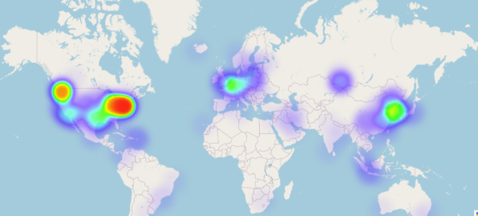
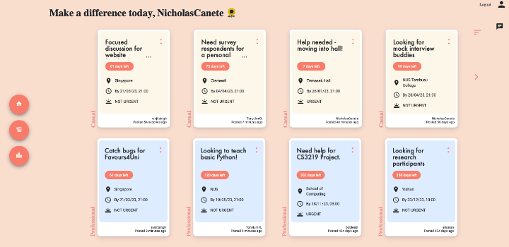
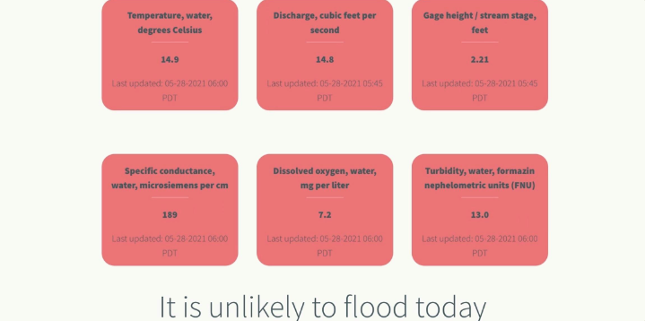
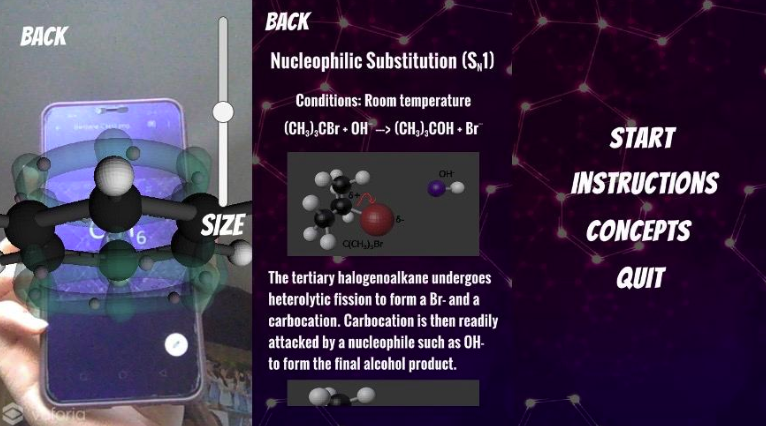
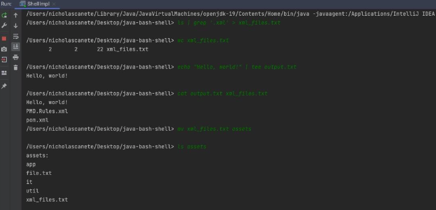
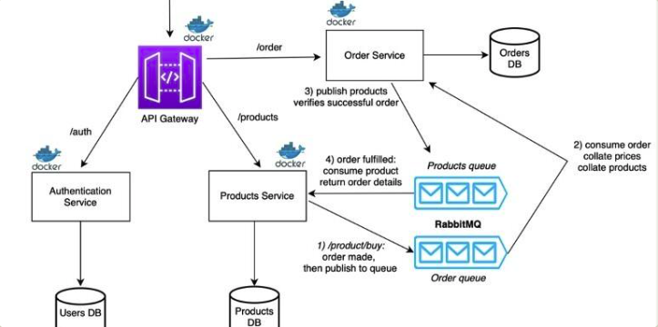

Developer Support Engineer at Auth0, Software Engineer by Training
Relevant coursework: Formal Methods in Software Engineering | Software Engineering Principles and Patterns | Parallel and Distributed Algorithms | Machine Learning | Artificial Intelligence | Computer Networks | Operating Systems | Database Systems | Software Testing
Sep 2023 - Present
Jan 2023 - Jun 2023 (Part-Time)
Aug 2022 - Nov 2022
Jan 2022 - Jun 2022
May 2021 - Dec 2021
A tool to spin up heatmap visuals and summary stats on an Auth0 user base
Digital human avatar that conducts HR interviews with dynamic questions and responses based on verbal inputs
Full stack microservice web app for users to request and fulfil favours, complete with authentication, messaging and leaderboard features
Live urban flooding predictions for Fanno Creek, Oregon. Features server-side prediction using Random Forest and web-scraping from US Geological Services.
Android App to visualise 3D chemical molecules and reactions. The app renders 3D animations when it detects a unique marker in the live camera feed.
Java app that mimics a subset of Bash scripting capabilities. Includes common commands and features like redirection, substitution, sequence commands and piping.
A microservice template for building an e-commerce backend, applying salient software architecture patterns and AMQP.
